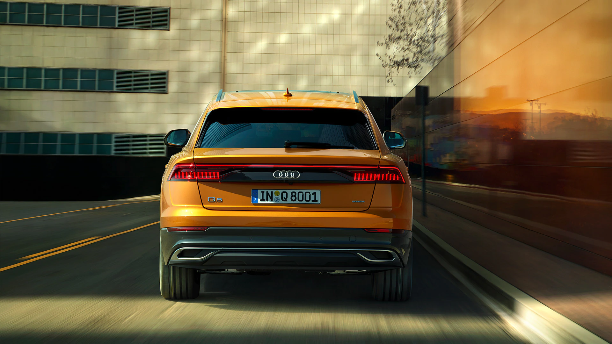

With the imposing Singleframe in octagonal design, the Audi Q8 is t he new face of the Q family. The brawny radiator grille stands upright and, together with the spoiler that has been drawn toward the front and the large, highly contoured air inlets, emphasizes the selfconfident look. The elegantly sloping roofline terminates in gently inclined Dpillars and rests against the quattro blisters above the wheel arches, which house up to 53.34 cms (R21) wheels. A light strip connects the uni ts at the rear.
